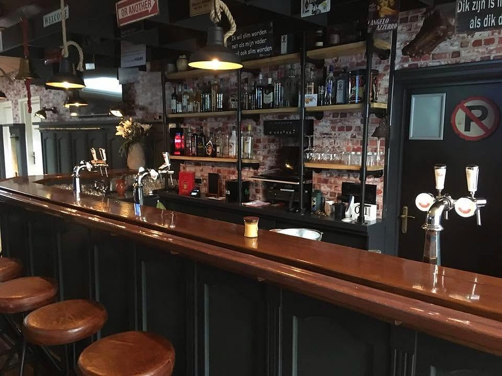
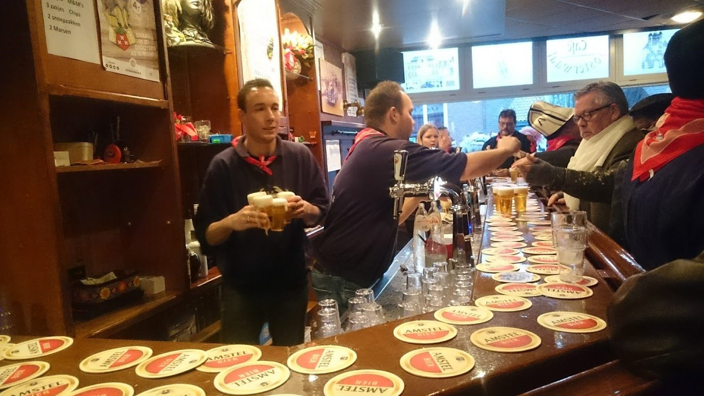
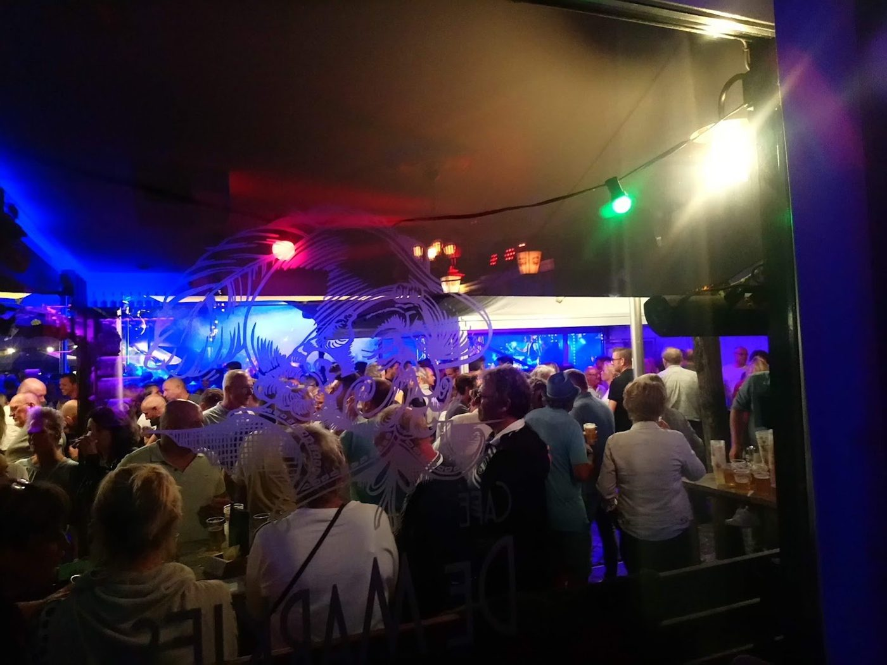
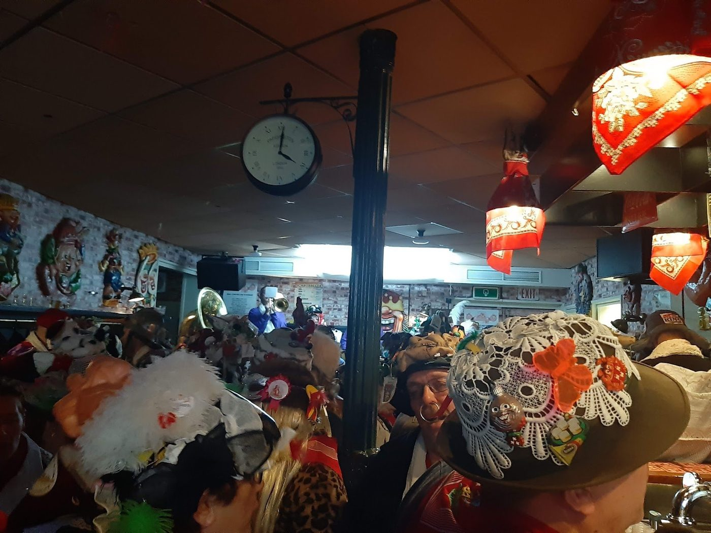
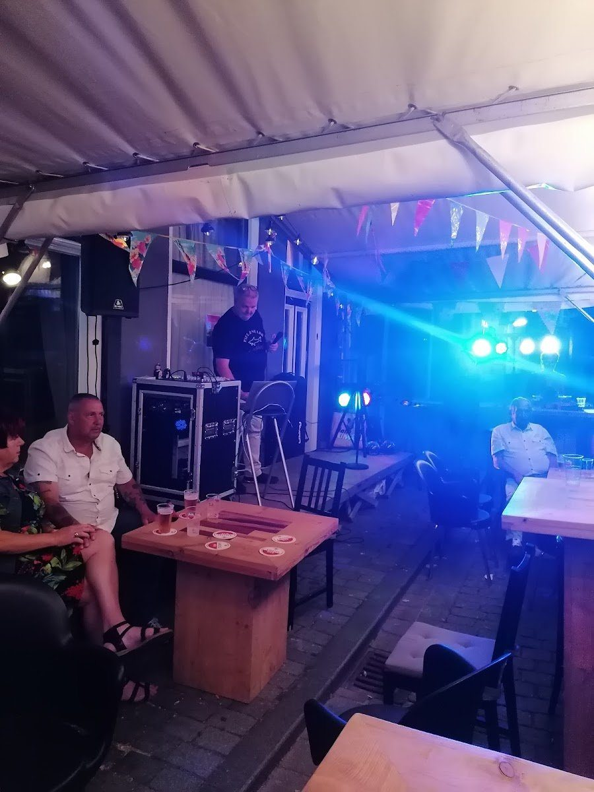
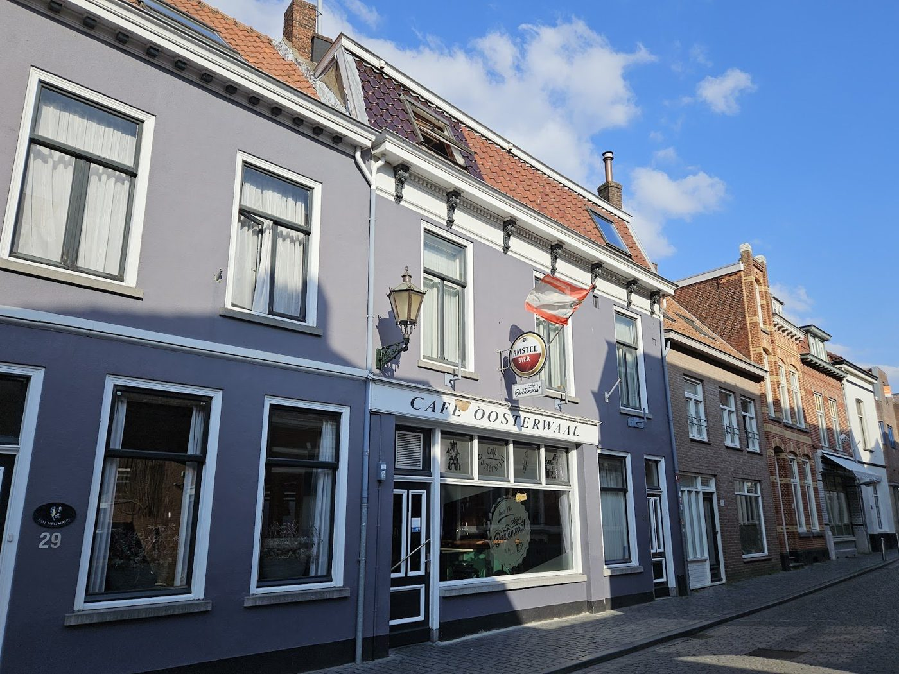
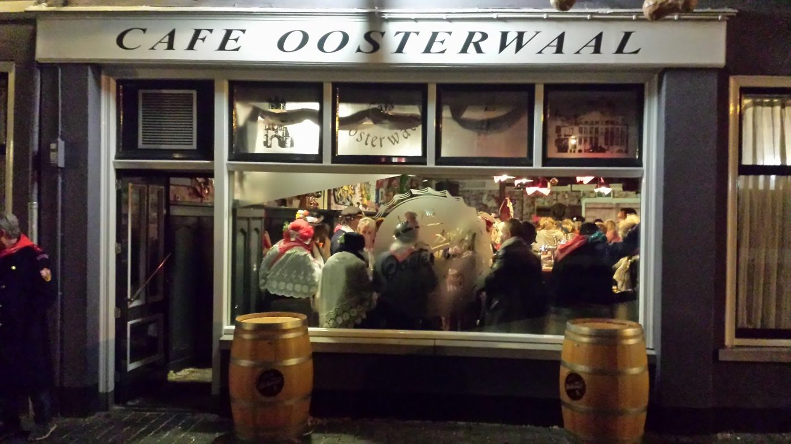
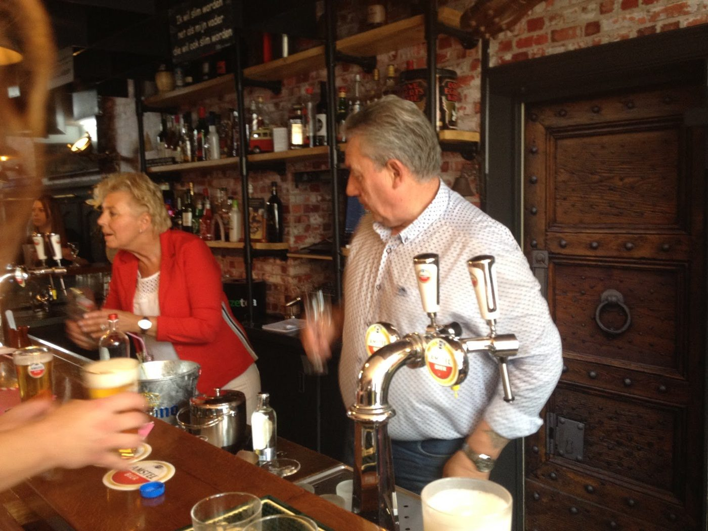

Gezellig bruin café in de Potterstraat
Voor een eerlijk glas bier, een potje biljart of kaarten, en natuurlijk voor vastenavond, je feest of groepsuitje. Midden in Bergen op Zoom.
Ton · Google
Altijd wat te beleven
Een biertje aan de bar, een spelletje of een avond feest: bij ons kan het allemaal.

Het café
Een biertje aan de bar, een goed gesprek en een gezellige stadskroeg waar je je meteen thuis voelt.

Bingo & meezingen
Regelmatig iets te doen, zoals een bingo voor de visvereniging of een meezingmiddag met karaoke.

Vastenavond
Met vastenavond en de Krabbenfoor is het feest in de Potterstraat. Kom op tijd, want het kan druk worden.

Besloten feesten
Je verjaardag of feest bij ons in het café, met plek voor een zanger en lekkere hapjes.
Openingstijden
Zes dagen per week open. In het weekend al vanaf 14.00 uur.


Ook buiten openingstijden welkom
Wil je buiten onze openingstijden langskomen met een groep? Laat het ons weten, dan zetten we de deur voor je open.
- Een bespreking
- Een groepsuitje
- Een potje kaarten
- Een biljartmiddag
- Een besloten feest
Iets te vieren of met een groep?
Laat weten wat je in gedachten hebt, wanneer en met hoeveel personen. Dan kijken we samen wat er kan.
Wat gasten zeggen
"Heerlijk sfeer, altijd een warm welkom. En een eerlijk glas bier!"
Ton · Google"Gezelligheid, een goed gesprek en gekoelde dranken...wat kan een mens zich nog meer wensen"
S. Wilhelm · Google"Gezellig café tijdens vastenavond,goede bediening,kan soms best druk zijn op de zaterdag"
Rob · Google
Maak kennis met Anja
Anja groeide zo'n beetje op achter de bar, in de kantine van voetbalclub FC Bergen. Daar nam ze het stokje over van haar moeder. Een eigen café bleef altijd een wens, en sinds 2018 staat ze in haar eigen zaak aan de Potterstraat.
Bij Anja's Oosterwaal draait het om gezelligheid en een warm welkom. Of je nu voor het eerst binnenstapt of al jaren vaste gast bent.
Neem contact op
Een feest, groepsuitje of gewoon een vraag? Stuur een berichtje of bel even.
Bel of app Anja
Of loop gewoon binnen aan de Potterstraat. Je bent van harte welkom.